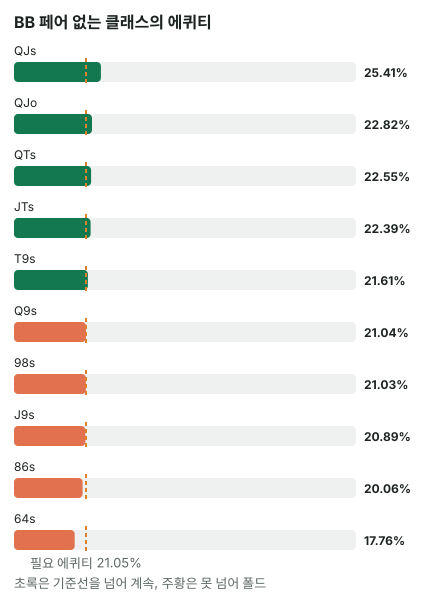

안녕하세요. A06에서는 리버 작은 벳에 MDF가 커서 많이 지켜야 했고, A07에서는 MDF가 안전선일 뿐이라는 걸 봤죠. A09에서는 버튼 쪽에서 BB가 몇 콤보 접는지 셌고요.
오늘은 자리를 바꿔 BB 쪽에서 봐요. 버튼의 작은 c-bet에 BB가 MDF만큼 지키려면 어떤 핸드까지 콜해야 하는지, 그리고 그게 정말 해야 하는 일인지 숫자로 따져 볼게요.
이 글에서 배울 것
- 플랍 1/3 c-bet의 MDF가 BB 레인지에 무엇을 요구하는지: 페어만으로는 왜 한참 모자란지
- 레인지 기준(MDF)과 핸드 기준(에퀴티 vs 필요 에퀴티)을 나눠 보고, 둘이 얼마나 가까운지 직접 세기
- 같은 이름의 핸드라도 무늬에 따라 에퀴티가 달라지는 이유
오늘의 핸드
Hero (BB · 100BB)


프리플랍
상대(BTN) 2.5BB 오픈 → SB 폴드 → Hero 콜
팟 2.5 + 2.5 + 0.5 = 5.5BB
플랍 · 팟 5.5BB


Hero 체크 → 상대 2BB c-bet → Hero는 콜? 폴드?
Hero는 페어가 없어요. Q 하이에 다이아 두 장이라, 보드의 7♦와 합쳐 턴·리버가 둘 다 다이아면 플러시가 돼요(백도어 플러시 드로우).
결론부터 말하면, 오늘 가정한 상대에게 Q♦T♦는 이번 결정 기준으로 콜이에요. 그리고 BB 레인지 전체로 보면, 에퀴티로 콜할 수 있는 핸드만 지켜도 MDF에 아주 가까운 만큼 지켜져요.
1단계. 두 숫자: MDF와 필요 에퀴티
정의 한 줄씩
MDF(최소 방어 비율)는 상대가 아무 두 장으로 블러프해도 이득을 못 보게 하려면 우리 레인지가 최소한 지켜야 하는 비율이에요. 필요 에퀴티는 핸드 하나가 콜해서 본전이 되려면 가져와야 하는 팟 몫이에요.
오늘 c-bet 2BB는 팟의 약 36.36%예요. 딱 3분의 1보다 조금 크지만, 흔히 "1/3 c-bet"이라 부르는 크기예요.
두 숫자가 어디서 나오나
버튼이 아무 두 장으로 블러프하면 2BB를 걸어 팟 5.5BB를 노려요. BB가 2 ÷ (5.5 + 2) = 약 26.67%(알파)보다 많이 접으면, 그 블러프는 이득이에요. 그래서 BB가 지켜야 하는 비율은 그 나머지예요.
MDF = 1 − 약 26.67% = 5.5 ÷ (5.5 + 2) = 약 73.33%
핸드 하나 쪽에서 보면, BB는 2BB를 내고 콜 뒤 팟 9.5BB에서 제 몫을 가져와야 해요.
필요 에퀴티 = 2 ÷ (5.5 + 2 + 2) = 2 ÷ 9.5 = 약 21.05%
같은 벳, 다른 질문
두 숫자는 같은 2BB 벳에서 나왔지만 묻는 게 달라요. MDF는 "레인지에서 몇 %를 지키나", 필요 에퀴티는 "이 핸드 하나가 콜할 값을 하나"예요.
이게 무슨 뜻이냐면, MDF는 레인지 전체를 한 덩어리로 보는 숫자라 어떤 핸드로 지킬지는 말해 주지 않는다는 거예요. 그건 핸드마다 에퀴티로 정해야 해요.
2단계. BB 레인지는 이 보드에 얼마나 맞았나 (가정 레인지)
BB 콜 레인지
A09에서 쓴 BB 콜 레인지를 그대로 가정해요(솔버 결과 아님). 22-99, A2s-A9s, K2s-KQs, Q6s+, J7s+, T7s+, 97s+, 86s+, 75s+, 64s+, 54s, A2o-ATo, K9o-KJo, Q9o+, J9o+, T9o, 98o예요.
레인지 전체를 볼 때는 Hero 카드를 지우지 않아요. BB가 이 자리에서 들 수 있는 모든 핸드를 놓고 전략을 보는 거니까요. 보드 카드만 지우면 397콤보예요. A09에서 숫자가 달랐던 건 그때 Hero 카드까지 지웠기 때문이에요.
페어 이상은 절반도 안 돼요
이 보드에서 페어 이상인 핸드는 145콤보, 레인지의 약 36.52%예요. 한 장으로 완성되는 드로우(남은 카드 4장 이상)는 하나도 없어요. K♠ 7♦ 2♣는 무늬가 다 다르고, 카드 사이가 멀어서 스트레이트 드로우도 생기지 않아요.
MDF 약 73.33%를 채우려면, 페어 없는 핸드로도 레인지의 3분의 1 넘게 더 지켜야 한다는 뜻이에요.
3단계. 페어 없는 핸드를 에퀴티로 줄 세우기
상대 c-bet 레인지 (가정)
버튼이 오픈 레인지 전체(22+, A2s+, K9s+, QTs+, JTs, T9s, 98s, ATo+, KJo+, QJo, 221콤보)로 c-bet한다고 가정해요. 이 보드에서 그 안은 이렇게 갈려요.
- K 페어 이상: AK·KQ·KJ·KT·K9s, 셋 KK·77·22, 오버페어 AA
- K 아래 포켓 페어: QQ~88, 66~33
- A 하이: AQ·AJ·AT·A9s~A3s(A7s·A2s는 페어)
- 아무것도 없는 핸드: QJ·QT·JT·T9s·98s
이 레인지 상대로, BB의 클래스(QTs처럼 이름이 같은 핸드 묶음. 수딧이면 무늬 조합 4개)마다 에퀴티(턴·리버 전부 센 값)를 구하면 이래요.
| BB 핸드 | 콤보 | 에퀴티 | 필요 에퀴티 약 21.05% 대비 |
|---|---|---|---|
| ATo | 12 | 약 32.75% | 넘음 |
| A9s · A8s | 각 4 | 약 31.53% · 약 30.12% | 넘음 |
| A9o | 12 | 약 28.92% | 넘음 |
| A5s · A6s · A4s · A3s | 각 4 | 약 28.32% · 약 27.98% · 약 27.67% · 약 27.31% | 넘음 |
| A8o | 12 | 약 27.45% | 넘음 |
| A5o · A6o · A4o · A3o | 각 12 | 약 25.6% · 약 25.22% · 약 24.93% · 약 24.57% | 넘음 |
| QJs | 4 | 약 25.41% | 넘음 |
| QJo · QTs · JTs · T9s | 12 · 4 · 4 · 4 | 약 22.82% · 약 22.55% · 약 22.39% · 약 21.61% | 넘음 |
| Q9s · 98s · J9s | 각 4 | 약 21.04% · 약 21.03% · 약 20.89% | 아슬아슬하게 못 넘음 |
| 86s, QTo, JTo, Q8s, T8s, 65s, J8s, Q6s, T9o, 54s, Q9o, 98o, J9o, 64s | 약 17.76% ~ 약 20.06% | 못 넘음 |

왜 A 하이가 위에 있을까
A 하이는 상대의 아무것도 없는 핸드(QJ·QT·JT·T9s·98s)를 지금 이기고 있어요. 이 보드에서 K보다 높은 카드는 A뿐이라, 턴·리버에 A가 오면 탑페어도 돼요. 그래서 페어가 없어도 약 24.57%~약 32.75%로 필요 에퀴티를 넉넉히 넘어요.
QJ·QT·JT·T9 같은 핸드는 지금 이기는 상대가 거의 없어요. 대신 턴·리버에 Q·J·T·9가 맞으면 상대의 K 아래 작은 포켓 페어를 넘고, 백도어 스트레이트(두 장이 더 와야 완성) 기회도 있어 21%를 겨우 넘어요. 86s·65s 같은 낮은 핸드는 맞아도 넘는 상대가 더 적어요.
경계 근처(T9s 넘음, Q9s·98s 못 넘음)는 차이가 소수점 아래라, 이유를 붙이기보다 계산 결과로 봐요.
세어 보면
필요 에퀴티를 넘는 핸드를 모으면 이래요.
- 페어 이상 145콤보
- A 하이 108콤보(ATo·A9s·A8s·A9o·A6s~A3s·A8o·A6o~A3o)
- 위쪽 커넥터 28콤보(QJs·QJo·QTs·JTs·T9s)
145 + 108 + 28 = 281, 281 ÷ 397 = 약 70.78%
MDF 약 73.33%와 비교하면 조금 모자라지만 거의 붙어 있어요.
4단계. 오늘의 핸드 Q♦T♦
Hero의 Q♦T♦를 지우면 상대 레인지는 196콤보이고, 그 상대 에퀴티는 약 23.47%예요.
| 숫자 | |
|---|---|
| 필요 에퀴티 | 약 21.05% |
| Q♦T♦ 에퀴티 | 약 23.47% |
조금 넘어서 이번 결정 기준으로 콜이에요. 표의 QTs 클래스 평균 약 22.55%보다 높은 이유는 무늬에 있어요. 보드가 ♠·♦·♣ 한 장씩이라, QTs 네 콤보 중 ♠·♦·♣ 세 콤보에는 백도어 플러시가 붙고 하트 한 콤보만 없어요. 그 한 콤보가 평균을 끌어내린 거예요.
남은 베팅이 있어 실제 결과는 달라질 수 있어요. 에퀴티는 리버까지 다 가져간다고 본 값이고, BB는 플랍부터 먼저 행동해서 그만큼 다 가져가기 어려울 수 있어요.
왜 그럴까: 작은 벳은 필요 에퀴티를 낮춰서, MDF와 에퀴티 기준이 만나요
MDF는 "아무 두 장 블러프"를 막는 선
MDF는 상대가 에퀴티 0인 블러프로 벳한다고 볼 때의 기준이에요. 그런데 플랍에선 상대 c-bet 레인지에 진짜 블러프도, 밸류도, 그 사이 핸드도 섞여 있고, 우리 핸드도 턴·리버에 좋아질 수 있어요. 그래서 플랍에서는 MDF를 그대로 채울 의무보다는, 너무 많이 접고 있지 않은지 보는 비교선으로 써요.
그런데 왜 둘이 이렇게 가까울까
오늘 2BB 벳은 필요 에퀴티가 약 21.05%로 낮아요. 페어 없는 핸드도 A 하이나 Q·J 같은 높은 카드면 이 정도는 가지니, 에퀴티 기준으로 콜하는 핸드가 자연스럽게 많아져요. 그 결과가 약 70.78%로, MDF 약 73.33%에 거의 붙었죠.
이게 무슨 뜻이냐면, 작은 c-bet 앞에서는 "MDF를 채우려고 억지로 콜한다"가 아니라, 핸드마다 정직하게 에퀴티로 판단해도 MDF 근처까지 간다는 거예요. 벳이 커지면 어떻게 될지는 연습 문제에서 직접 세 봐요.
자주 하는 실수
실수 1. "MDF가 73%니까 아래쪽 핸드까지 다 콜" MDF 숫자를 채우려고 아무 핸드나 콜하는 경우예요. 오늘 86s·65s·64s 같은 핸드는 약 17.76%~약 20.06%로 필요 에퀴티 약 21.05%를 못 넘었어요. 대신 핸드 하나는 에퀴티로 정하고, MDF는 레인지 전체가 너무 많이 접는지 보는 데만 써요.
실수 2. "페어가 없으니 접는다" 페어 여부로만 자르는 경우예요. 그러면 145콤보, 약 36.52%만 지켜서 MDF의 절반 정도밖에 안 돼요. 오늘 A 하이 108콤보는 페어가 없어도 필요 에퀴티를 넉넉히 넘었죠. 대신 A 하이·높은 카드·백도어까지 넣어 에퀴티로 봐요.
실수 3. 콤보 하나를 셀 때 내 카드를 빼먹는다 레인지 숫자를 쓰면서 Hero 카드가 상대 레인지에서 무엇을 지우는지 잊는 경우예요. 오늘 Q♦T♦를 지우자 버튼 레인지는 221에서 196으로 줄었어요(Q♦·T♦가 든 QQ·TT·AQ·QT·JT 등의 콤보가 빠짐). 대신 레인지 전체를 볼 땐 보드만, 내 핸드 하나를 볼 땐 내 카드까지 지워요.
"에퀴티로 지키면 MDF에 조금 모자라는데, 상대가 그걸 노리면요?"
좋은 질문이에요. 오늘 숫자로는 약 70.78%와 약 73.33%의 차이라, 버튼이 아무 두 장으로 c-bet해도 아주 조금 이득을 보는 정도예요.
그 틈을 메우는 방법은 두 가지예요. 경계 바로 아래(Q9s·98s·J9s)처럼 아슬아슬한 핸드 몇 개를 더 지키거나, 상대가 정말 c-bet을 아무 핸드로나 하는지 지켜보고 고쳐 가는 거예요. 오늘 계산은 c-bet 레인지를 오픈 레인지 전체로 가정했으니, 상대가 그보다 골라서 벳한다면 숫자도 달라져요.
숫자가 뒤집히는 지점
핸드 하나의 기준은 에퀴티와 필요 에퀴티의 차이예요. 필요 에퀴티는 벳 크기로, 에퀴티는 내 카드(무늬까지)와 상대 c-bet 레인지로 움직여요.
레인지의 기준은 에퀴티로 지키는 비율과 MDF의 차이예요. 필요 에퀴티가 약 21.05%에서 오르면 3단계 표에서 몇 줄이 빠지는지, MDF는 얼마나 내려가는지를 같이 봐요.
선생님의 한마디
작은 c-bet을 맞으면 이 순서예요.
- 필요 에퀴티를 먼저 구해요. 오늘 2BB면 약 21.05%라 문턱이 낮아요
- 내 핸드에 페어 → A 하이 → 높은 카드 → 백도어가 있는지 차례로 봐요
- 아슬아슬하면, 내 레인지가 이 보드에서 너무 많이 접고 있지 않은지 MDF로 한 번 비교해요
연습 문제
학습툴 에퀴티 계산기에는 레인지 입력이 없어서, 핸드 대 핸드(예: Q♥T♥ vs K♣J♣, 플랍 K♠ 7♦ 2♣)로 상대 핸드 하나씩 확인해 보세요. 레인지 숫자는 블로그에서 직접 계산한 값이에요.
문제 1. 같은 보드, 같은 두 레인지인데 버튼이 2.75BB(하프팟)로 c-bet했어요. 필요 에퀴티와 MDF를 구하고, 3단계 표를 써서 에퀴티로 지키는 비율이 MDF와 얼마나 벌어지는지 보세요.
정답 보기
- 필요 에퀴티 = 2.75 ÷ (5.5 + 2.75 + 2.75) = 2.75 ÷ 11 = 25%
- MDF = 5.5 ÷ (5.5 + 2.75) = 약 66.67%
표에서 약 25%를 넘는 페어 없는 핸드는 ATo·A9s·A8s·A9o·A6s~A3s·A8o·A5o·A6o와 QJs로 88콤보예요. A4o·A3o(약 24.93%·약 24.57%)와 QJo 아래는 빠져요.
145 + 88 = 233, 233 ÷ 397 = 약 58.69%
MDF 약 66.67%와의 차이가 1/3팟 때보다 훨씬 커졌어요. 필요 에퀴티가 25%로 오르자 A4o·A3o·QJo·QTs·JTs·T9s(12 + 12 + 12 + 4 + 4 + 4 = 48)가 빠졌는데, MDF는 그만큼 내려가지 않았기 때문이에요. 이런 벳 앞에서 MDF를 채우려면 에퀴티가 모자란 핸드까지 콜해야 해요.
문제 2. 이번엔 Hero가 T♥9♥예요. 보드·벳(2BB)·상대 레인지는 오늘과 같아요. 3단계 표의 T9s 클래스는 약 21.61%로 필요 에퀴티를 넘었는데, 이 콤보도 콜일까요? 먼저 이 콤보가 클래스 평균보다 높을지 낮을지를 보드 무늬로 따져 보세요.
정답 보기
보드는 ♠·♦·♣ 한 장씩이라 하트가 없어요. T♥9♥는 백도어 플러시가 없는 콤보라, 클래스 평균보다 낮을 거라고 먼저 짐작할 수 있어요.
계산하면 에퀴티 약 18.86% < 약 21.05% → 폴드. 클래스 평균은 기준을 넘어도, 이 한 콤보는 못 넘어요. 경계 근처 클래스일수록 내 카드 그대로 다시 봐야 하는 이유예요.
핵심 정리
- MDF는 레인지 기준, 필요 에퀴티는 핸드 기준이에요. 같은 벳에서 나와도 묻는 게 달라요
- K♠ 7♦ 2♣에서는 BB 페어 이상이 약 36.52%뿐이라 페어만으로 MDF의 절반 정도밖에 못 지켜요. A 하이·높은 카드·백도어가 나머지를 채워요
- 1/3팟 같은 작은 벳은 필요 에퀴티가 낮아서, 에퀴티로 정직하게 고른 콜이 MDF 근처까지 가요
- 레인지 숫자는 클래스 평균이라, 경계 근처에선 내 카드 그대로(무늬까지) 다시 봐요
정리하며
오늘은 BB가 K♠ 7♦ 2♣에서 버튼의 2BB c-bet을 맞은 장면을 봤어요. MDF는 약 73.33%를 요구하는데 페어는 약 36.52%뿐이었고, A 하이와 위쪽 커넥터를 에퀴티로 더하니 약 70.78%까지 와서 MDF에 거의 붙었죠. Q♦T♦는 약 23.47%로 아슬아슬한 콜이었어요.
다음 글 A33에서는 오늘처럼 플랍을 콜한 뒤를 따라가요. 턴에 또 벳을 맞았을 때 A7o 미들 페어로 계속 갈지, 턴 카드 한 장이 계산을 어떻게 바꾸는지 봐요.
AI 작성 · 숫자는 계산 검증 (콤보는 하나씩 셈, 에퀴티는 턴·리버 전부 세기, 레인지 쪽은 클래스 평균) · 가정 레인지 기준 (솔버 결과 아님) · MDF는 이론 기준 · 이번 한 번의 결정 기준